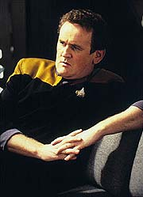
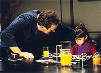
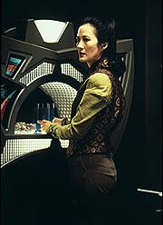
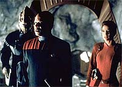
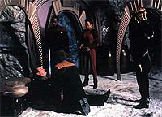

MANCHETE
DO EPISDIO
Mistrio
chama ateno do espectador
e mantm integridade dos personagens
Episdio
anterior | Prximo
episdio
Sinopse:
Data Estelar: 47581.2.
O'Brien a bordo do Explorador Rio
Grande dita um dirio pessoal sobre os estranhos acontecimentos
que ele viveu nas ltimas 52 horas. Ele no consegue pensar em
outra coisa, seno voltar para o sistema Parada e avisar os seus
habitantes de que algo esta muito errado com a Federao --o
que, exatamente, ele no tem certeza.
Ele comea a se lembrar que tudo comeou dois dias atrs,
quando ele acabara de voltar de um encontro sobre segurana no
sistema Parada (no quadrante Gama). As duas faces governantes
daquele mundo, o "governo de direito" e "os
rebeldes", aps 12 anos de guerra civil, decidiram realizar
uma conferncia de paz e o local escolhido foi Deep Space Nine.

A
partir da estranhos acontecimentos se iniciam: Molly e Keiko o
tratam de forma distante; Sisko manda o alferes DeCurtis preparar
o sistema de segurana para a conferncia sem consultar O'Brien;
Bashir lhe aplica um minucioso exame fsico; Sisko o manda
consertar as torres de atracao superiores em vez de se
envolver com a segurana da conferncia; DeCurtis no deixa
O'Brien entrar em um dos aposentos destinados s delegaes,
alegando que somente Kira tinha a senha de acesso. Porm, quando
O'Brien finge partir e se esconde, ele v DeCurtis abrir a porta
sem precisar de senha alguma.
De volta a seus aposentos, ele vai jantar com Keiko,
e termina de comer (antes mesmo de comear) com a ntida impresso
de que o cozido feito por Keiko estava envenenado. Aps Keiko ir
dormir, O'Brien comea a pesquisar e descobre que todos os dirios
aps o seu retorno foram protegidos com senha. Ele consegue
burlar o sistema, mas no descobre muito, alm do fato de que o
resto da tripulao analisou repetidamente os prprios dirios
do chefe.
O'Brien recorre a Odo, que acaba de chegar de Bajor. O Comissrio,
apesar de a princpio simptico para com O'Brien, acaba por se
mostrar parte da mesma "conspirao" que envolvia o
resto da tripulao.

O'Brien
consegue fugir da estao no Explorador Rio Grande, logo aps
Sisko, Kira e Bashir tentarem domin-lo e sed-lo. Como um
contato subespacial com a almirante Rollman torna-se perda de
tempo, O'Brien decide ir para o sistema Parada, onde ele acredita
poder encontrar as respostas para tudo isto.
A narrativa volta ao presente, com O'Brien sendo perseguido pelo
Explorador Mekong. O chefe consegue iludir seus perseguidores, e
quando os ocupantes do outro explorador de transportam para o
planeta Parada II, ele vai atrs.
Chegando em um complexo de cavernas, ele encontra Sisko e Kira
conversando com o lder dos "rebeldes", de nome Coutu.
Coutu diz que todas as explicaes para O'Brien esto atrs de
uma porta. Porm, quando Coutu vai abri-la, O'Brien levanta a sua
arma e mortalmente ferido pelo guarda-costas do lder aliengena.
A porta se abre e passam por ela Bashir, que vai socorrer O'Brien,
mortalmente ferido, e um outro idntico chefe O'Brien. Coutu
explica que o verdadeiro O'Brien foi raptado pelo "governo de
direito" e um replicante foi enviado para DS9, um replicante
idntico ao chefe e que acreditava plenamente que era o
verdadeiro Miles Edward O'Brien.
O propsito do replicante era assassinar algum durante a conferncia
de paz. Ele tinha uma personalidade submersa que se revelaria
quando fosse a hora apropriada. Sisko e o resto da tripulao
fizeram o melhor que puderam para isol-lo de todas as reas
essenciais e tentar aprender o mximo sobre o replicante enquanto
os "rebeldes" tentavam encontrar o verdadeiro, o que
finalmente aconteceu, quando tal replicante j estava rumando
para Parada. Apesar de ouvir tudo isto, o replicante morre ainda
pensando ser o verdadeiro O'Brien e suas ltimas palavras so de
amor a Keiko.
Comentrios:
"Whispers" um dos melhores episdios da srie
e tambm o melhor esforo de DS9 (e provavelmente de
toda a histria de Jornada) para oferecer um "mistrio
trekker". Fiquem atentos, pois prometo sussurrar bem baixinho
o porqu.
Normalmente os fs no sentam para assistir a um episdio de Jornada
(ou de drama televisivo em geral) ansiando por um "mistrio
da semana". Digo isto por que normalmente em tais "mistrios
da semana", o episdio perde um bocado de tempo,
estabelecendo o mistrio, soltando pistas e reviravoltas e
revelando a charada ao seu final, e na maioria das vezes isto
feito s custas do desenvolvimento dos personagens --JUSTAMENTE a
principal razo para assistir a Jornada.

Outro
problema que tais episdios normalmente envolvem um alto grau
de parania, algo que eu tendo a achar mais engraado do que
interessante. O episdio em questo um mistrio e um
festival de parania, mas transcende os esteretipos e as limitaes
do formato com uma extrema simplicidade e sinceridade, aliada a
uma infinitamente perfeita execuo.
(Apesar dos elogios eu no gostaria de ver similares a este episdio
uma vez por semana. Uma vez por temporada est bom pra mim, mas
com qualidade.)
O ponto de partida para a qualidade do episdio que sua
premissa, "O O'Brien replicante", bastante simples e
enxuta, com regras bem definidas, que no vo "sofrendo uma
metamorfose" ao longo do episdio. Isso garante a
credibilidade do roteiro. Outro grande acerto do episdio foi
fazer o O'Brien (replicante) exatamente igual ao O'Brien real, fsica
e mentalmente, com exatamente a mesma caracterizao, o que o
faz DE FATO O'Brien no curso do episdio.
O episdio tem sucesso porque a partir da sua premissa, os
personagens respondem estritamente (sem exageros ou manipulaes)
dentro de suas caracterizaes: O'Brien tentando descobrir o que
ou quem so "eles" e o que "eles" querem e o
restante do pessoal da estao tentando ganhar tempo e impedir
que o replicante fizesse qualquer coisa de errado. Ao final, o
episdio extremamente tocante porque, em um certo sentido,
Miles Edward O'Brien morreu naquelas cavernas de Parada II.
(A posio mais difcil foi a de Keiko, interagir com uma rplica
exata do seu marido --que ela no tinha certeza se iria voltar a
ver--, que a qualquer momento poderia "despertar" e
quebrar o seu pescoo. Deve ter sido uma experincia terrvel.
Levando em conta os acontecimentos de "Armageddon
Game" ento, absolutamente insuportvel. Eu gostaria de
saber que explicao que ela deu para a Molly sobre o
replicante?)

A
narrativa (com "voiceover") de O'Brien (o replicante)
serviu maravilhosamente ao episdio, no somente para manter a
ateno do espectador, mas tambm para tornar virtualmente
impossvel audincia descobrir realmente o que estava
acontecendo.
claro que pistas foram deixadas no sentido de que havia
"alguma coisa errada" com O'Brien e no com os outros
(como, quando durante o seu exame mdico, O'Brien perguntar a
Bashir se ele no est doente, justificando com isso as reaes
estranhas dos outros), mas entrar de fato nos detalhes desta
"alguma coisa errada" foi deixado como um trabalho difcil
para os espectadores.
Vendo o episdio uma segunda vez (entre outros pontos), a
"converso" de Jake fica entendida como simplesmente
Ben explicando o que estava acontecendo a ele, assim como o
aparente lapso de memria de Bashir, que serviu para testar (de
modo informal) a memria do replicante.
Acho que a cena do "cozido envenenado" at bastante
inocente. Ela fez a comida preferida do "marido" para
agrad-lo (e testar novamente a memria do replicante) e no
comeu algo de que no gostava. A agonia de Keiko com a situao
e a crescente parania do replicante que deram ares sinistros
ao coitado do cozido.

A
fuga de O'Brien (digo, do replicante) foi fantstica. De fato,
ningum conhece o funcionamento da estao como ele. Quando ele
levantou os campos de fora, ele impediu que ele fosse
transportado ou posto pra dormir com gs (os campos de fora
isolam as sees incluindo as paredes o teto e o cho), os
campos de fora em toda parte impediram o funcionamento normal da
estao e Sisko teve que baix-los todos. A fuga do replicante
(a se julgar pela fala da almirante Rollman) j era uma contingncia
considerada e Sisko j estava esperando o aviso do resgate do
real O'Brien.
(To conveniente termos quase ao mesmo tempo a fuga do replicante
e a liberao do verdadeiro O'Brien, no mesmo? A me
dizem: "P, eles tinham que acabar o episdio, n?",
ao que respondo: "Eu sei, eu sei".)
A direo de Les Landau primorosa, apostando nos pequenos
detalhes e nas pequenas diferenas para causar apreenso em
O'Brien (replicante) e na audincia no processo. A cena em que
O'Brien chega concluso de que Keiko est tentando envenen-lo
incrivelmente bem dirigida (e atuada), uma das mais incrveis
cenas de toda a srie. A msica de Dennis McCarthy tambm foi
bem boa, especialmente na fuga do replicante.
Colm Meaney, que tem que LITERALMENTE carregar o episdio nas
costas e aparecer em todas as cenas (para manter o mistrio do
episdio), foi fenomenal, emprestando ao O'Brien replicante
caractersticas de antecipao, improvisao e finalmente de
herosmo. por isto que ele um dos melhores atores da histria
de Jornada. O resto do elenco regular ofereceu a excelente
performance que podemos esperar dele.
Chao esteve tima, bastante realista frente situao. Os
demais convidados fizeram o pedido e nada mais.
Em sua busca pela verdade, o replicante varreu virtualmente todos
os clichs Sci-Fi da histria para explicar: "O que diabos
est errado com eles?" Ele fez tudo que deveria fazer e mais
um pouco, mas foi meio engraado.
Um toque de nostalgia: mais algum se lembrou do episdio "Conspiracy",
da primeira temporada da Nova Gerao, aps O'Brien
falar com a almirante Rollman pelo subespao?
Bons toques de continuidade com relao ao episdio "Rivals",
no dilogo entre Quark e o replicante O'Brien e tambm entre
Bashir e o chefe, dando a entender que os acontecimentos de "Armageddon
Game" levaram a relao dos dois a outro nvel (era o
replicante, no o real, mas vocs entenderam, no ?).
Em um dos dirios que O'Brien ouviu falado, de passagem, algo
sobre um certo tratado entre a Federao e Cardssia. Tal
tratado ser explorado no episdio duplo "The
Maquis", mais tarde nesta temporada.
A "cena da tosse do replicante O'Brien" foi antolgica!
O excesso de falas na cena final (escritas obviamente para
explicar o acontecido para a audincia) pegou um pouco mal, eu
preferiria algo com mais imagens, smbolos e pausas.
"Whispers" um maravilhoso episdio, que deixa
uma sensao parecida com a de muitos episdios de "The
Twilight Zone" ao seu final. No exatamente m companhia.
Citaes
O'Brien - "No, they
did, they GOT to you..."
("No, eles fizeram, eles te ALCANARAM..."
Bashir - "How's the sex life?"
("Como vai a vida sexual.")
O'Brien - "I don't HAVE a sense of humor."
("Eu no tenho senso de humor.")
O'Brien - "I believe you've poked into every orifice in my
body --and created a few new ones."
("Acho que voc j fuou em cada orifcio do meu corpo
--e at criou uns novos.")
Trivia:
 Presena de Keiko e Molly
O'Brien.
Presena de Keiko e Molly
O'Brien.
Este episdio
exemplifica uma (quase que) tradio anual de Deep Space Nine:
episdios em que o chefe O'Brien come o po que o diabo amassou.
Estes episdios so usualmente chamados de "Let's Torture
O'Brien" ("Vamos torturar o O'Brien") ou
"O'Brien Must Suffer" ("O'Brien tem que
sofrer"). A tradio realmente se iniciou no episdio
passado, "Armageddon Game", e comea a se tornar
particular srie aqui, em "Whispers". Um
outro exemplo, nesta mesma segunda temporada, o episdio "Tribunal",
em que O'Brien preso e torturado pelos Cardassianos. Outros
exemplos ao longo da srie: "Visionary", da
terceira temporada, em que O'Brien morre e substitudo por uma
verso alternativa sua de um futuro quase que imediato; "Hard
Time", da quarta temporada, em que O'Brien condenado a
vivenciar (em sua mente) dcadas de encarceramento em uma priso
aliengena; "The Assignment", da quinta
temporada, em que um Pagh-Wraith possui o corpo de Keiko; "Empok
Nor", da quinta temporada, em que O'Brien (preso na
abandonada estao Empok Nor, gmea de Terok Nor, a nossa DS9)
tem que parar um enlouquecido e assassino Garak; "Honor
Among Thieves", da sexta temporada, em que O'Brien se
infiltra no sindicato Orion; e "Time's Orphan",
da sexta temporada, em que sua filha Molly sofre um acidente
temporal e se torna uma jovem adulta.
Participao de Susan
Bay (esposa de Leonard Nimoy) como a almirante Rollman, o seu
mesmo papel de "Past
Prologue", da primeira temporada.
O produtor-executivo Ira
Steven Behr ficou muito satisfeito com o resultado final do episdio:
"Existe algo sobre o modo como foi filmado e sobre o ponto de
vista que torna este um episdio realmente especial, e obviamente
Colm Meaney um dos nossos melhores atores."
Devido necessidade de
se manter o mistrio, O'Brien teria que estar em cada cena. Isto
acabou levando o roteiro original de Coyle a ficar meio curto (49
pginas, quando o tamanho normal de 60 pginas). Por isso foi
introduzida a narrativa em "flashback", com o episdio
j se iniciando com O'Brien fugindo no Explorador.
Foi introduzido o
Explorador Mekong, o substituto do Explorador Ganges, destrudo
no episdio anterior, "Armageddon Game".
Em uma cena cortada do
roteiro, O'Brien cantava "The Minstrel Boy", aquela
mesma que ele cantou em dueto com o capito Maxwell em "The
Wounded", episdio clssico da quarta temporada da Nova
Gerao.
Foi utilizado pela
primeira vez em Jornada o termo "replicante", bem
conhecido do filme "Blade Runner".
Embora a histria e o
roteiro deste episdio sejam creditados a Paul Robert Coyle, uma
antiga nota de imprensa da Paramount apontava o roteiro como um
trabalho conjunto de Coyle e Michael Piller.
A idia original de
Coyle para o episdio, como foi esboada aos produtores, era ter
O'Brien acordando em uma realidade alternativa, onde ele nunca
teria voltado Deep Space Nine de seu encontro com os aliengenas.
Robert Hewitt Wolfe, um
dos principais roteiristas da srie, acredita que no haja nada
de errado em criar interessantes raas aliengenas. Entretanto,
o primordial para ele manter o foco nos personagens. Ele diz:
"Um bom exemplo do que quero dizer so os Paradans, em 'Whispers'.
Sabemos muito pouco sobre eles. Mas no precisamos. Sabemos tudo
o que precisamos para assistir a uma histria fascinante sobre
O'Brien. Estou certo de que poderia escrever uma redao sobre a
cultura deles, o comportamento, os hbitos reprodutivos etc. Mas
o ponto que, at onde diz respeito histria, isso tudo no
importa".
Ficha
tcnica:
Escrito por
Paul Robert Coyle
Direo de Les Landau
Exibido em 07/02/1994
Produo: 034
Elenco:
Avery Brooks como
Benjamin Lafayette Sisko
Ren Auberjonois como Odo
Nana Visitor como Kira Nerys
Colm Meaney como Miles Edward O'Brien
Siddig El Fadil como Julian Subatoi Bashir
Armin Shimerman como Quark
Terry Farrell como Jadzia Dax
Cirroc Lofton como Jake Sisko
Elenco convidado:
Rosalind Chao
como Keiko O'Brien
Todd Waring como DeCurtis
Susan Bay como almirante Rollman
Philip LeStrange como Coutu
Hana Hatae como Molly O'Brien
Majel Barrett como a voz do computador